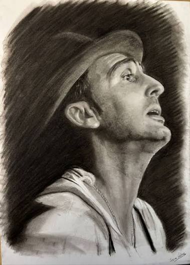

Carli Brihuega
Juan Carlos Brihuega Delgado, conocido como Carli Brihuega o simplemente Carli, es uno de los octavillas más legendarios, reconocidos y queridos en la historia del Carnaval de Cádiz. Destaca por su voz inconfundible y su dilatada trayectoria en comparsas míticas.
Published: August 20, 2026
More info